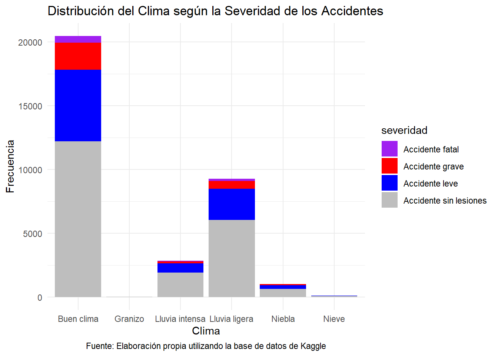

La base de datos ya se encuentra en formato en tidy, recordemos que el formato tidy fue popularizado por el autor Hadley Wickham, donde indican que cada variable debe tener su propia columna y cada observación su propia fila. Nuestra base de datos cumple con estar en formato tidy.
Vamos a llamar a nuestra base de datos, la cual vamos a utilizar durante el trabajo.
library(readr)library(tidyverse)
── Attaching core tidyverse packages ──────────────────────── tidyverse 2.0.0 ──
✔ dplyr 1.1.4 ✔ purrr 1.0.2
✔ forcats 1.0.0 ✔ stringr 1.5.1
✔ ggplot2 3.5.1 ✔ tibble 3.2.1
✔ lubridate 1.9.3 ✔ tidyr 1.3.1
── Conflicts ────────────────────────────────────────── tidyverse_conflicts() ──
✖ dplyr::filter() masks stats::filter()
✖ dplyr::lag() masks stats::lag()
ℹ Use the conflicted package (<http://conflicted.r-lib.org/>) to force all conflicts to become errors
advisorySpeed crashSeverity fatalCount holiday light
1 NA Minor Crash 0 No festivo Overcast
2 NA Non-Injury Crash 0 No festivo Bright sun
3 NA Non-Injury Crash 0 No festivo Bright sun
4 NA Non-Injury Crash 0 No festivo Dark
5 NA Non-Injury Crash 0 No festivo Overcast
6 40 Non-Injury Crash 0 No festivo Twilight
minorInjuryCount roadSurface seriousInjuryCount speedLimit weather
1 1 Sealed 0 50 Light rain
2 0 Sealed 0 50 Fine
3 0 Sealed 0 50 Fine
4 0 Sealed 0 50 Light rain
5 0 Sealed 0 50 Fine
6 0 Sealed 0 50 Light rain
Antes de aplicar cualquier gráfico o análisis de datos a nuestra base de datos, es importante eliminar las variables que no aportan al estudio, por ello, vamos a eliminar los valores NA que vengan en nuestra base de datos y columnas que no sean de nuestro interés.
library(dplyr)data_limpia <-na.omit(data_accidentes)data <- data_limpiacolnames(data) <-c("velocidad_recomendada", "severidad", "fatales" ,"festivos", "iluminación", "lesiones_menores", "carretera", "lesiones_graves", "limite_velocidad", "clima")data <- data %>%mutate(clima =case_when( clima %in%c("Fine", "Fine & Frost", "Fine & Strong wind") ~"Buen clima", clima %in%c("Light rain", "Light rain & Frost", "Light rain & Strong wind") ~"Lluvia ligera", clima %in%c("Heavy rain", "Heavy rain & Frost", "Heavy rain & Strong wind") ~"Lluvia intensa", clima %in%c("Snow", "Snow & Frost", "Snow & Strong wind") ~"Nieve", clima %in%c("Hail or Sleet", "Hail or Sleet & Frost", "Hail or Sleet & Strong wind") ~"Granizo", clima %in%c("Mist or Fog", "Mist or Fog & Frost", "Mist or Fog & Strong wind") ~"Niebla" ))data <- data %>%mutate(severidad =case_when( severidad %in%c("Non-Injury Crash") ~"Accidente sin lesiones", severidad %in%c("Minor Crash") ~"Accidente leve", severidad %in%c("Fatal Crash") ~"Accidente fatal", severidad %in%c("Serious Crash") ~"Accidente grave" ))data <- data %>%mutate(carretera =case_when( carretera %in%c("End of seal") ~"Final del asfalto", carretera %in%c("Sealed") ~"Asfalto", carretera %in%c("Unsealed") ~"Sin Asfalto", ))data <- data %>%mutate(iluminación =case_when( iluminación %in%c("Bright sun") ~"Soleado", iluminación %in%c("Overcast") ~"Nublado", iluminación %in%c("Twilight") ~"Amanecer o atardecer", iluminación %in%c("Dark") ~"Oscuro", iluminación %in%c("Unknown") ~"Desconocido", ))data <- data %>%mutate(festivos =case_when( festivos %in%c("Christmas New Year") ~"Navidad y Año Nuevo", festivos %in%c("Easter") ~"Pascua", festivos %in%c("Labour Weekend") ~"Fin de semana del Trabajo", festivos %in%c("Queens Birthday") ~"Cumpleaños de la Reina", festivos %in%c("No festivo") ~"No festivo", ))write.csv(data, "../data/data_traducida.csv")head(data)
Ahora hacemos un análisis estadístico de nuestra base de datos, de todas las variables.
library(kableExtra)
Warning: package 'kableExtra' was built under R version 4.4.3
Adjuntando el paquete: 'kableExtra'
The following object is masked from 'package:dplyr':
group_rows
# Seleccionar solo variables numéricasvariables_numericas <- data[sapply(data, is.numeric)]# Aplicar summary a cada variableresumen_lista <-lapply(variables_numericas, summary)# Convertir en data frameresumen_df <-do.call(cbind, resumen_lista)# Mostrar como tablakable(as.data.frame(resumen_df), caption ="Resumen estadístico de variables numéricas", booktabs =TRUE) %>%kable_styling(full_width =FALSE) %>%footnote(general ="Fuente: Elaboración propia utilizando la base de datos de Kaggle")
Resumen estadístico de variables numéricas
velocidad_recomendada
fatales
lesiones_menores
lesiones_graves
limite_velocidad
Min.
15.00000
0.0000000
0.0000000
0.0000000
20.00000
1st Qu.
40.00000
0.0000000
0.0000000
0.0000000
80.00000
Median
55.00000
0.0000000
0.0000000
0.0000000
100.00000
Mean
54.25181
0.0264626
0.3996381
0.1173905
87.80112
3rd Qu.
65.00000
0.0000000
1.0000000
0.0000000
100.00000
Max.
95.00000
7.0000000
26.0000000
14.0000000
110.00000
Note:
Fuente: Elaboración propia utilizando la base de datos de Kaggle
library(kableExtra)# Seleccionar solo variables categóricas (factor o character)variables_categoricas <- data[sapply(data, function(x) is.factor(x) ||is.character(x))]# Resumen para cada unalibrary(dplyr)library(tidyr)resumen_todas <-lapply(names(variables_categoricas), function(var) { tabla <-table(variables_categoricas[[var]]) prop <-prop.table(tabla) df <-data.frame(Variable = var,Categoria =names(tabla),Frecuencia =as.vector(tabla),Proporcion =round(as.vector(prop), 3) )return(df)})# Unir todos los resúmenesresumen_final <-bind_rows(resumen_todas)# Mostrar con kablekable(resumen_final, caption ="Resumen de variables categóricas", booktabs =TRUE) %>%kable_styling(full_width =FALSE) %>%footnote(general ="Fuente: Elaboración propia utilizando la base de datos de Kaggle")
Resumen de variables categóricas
Variable
Categoria
Frecuencia
Proporcion
severidad
Accidente fatal
783
0.023
severidad
Accidente grave
2982
0.088
severidad
Accidente leve
9065
0.269
severidad
Accidente sin lesiones
20878
0.619
festivos
Cumpleaños de la Reina
398
0.012
festivos
Fin de semana del Trabajo
362
0.011
festivos
Navidad y Año Nuevo
1267
0.038
festivos
No festivo
31179
0.925
festivos
Pascua
502
0.015
iluminación
Amanecer o atardecer
1506
0.045
iluminación
Desconocido
29
0.001
iluminación
Nublado
13484
0.400
iluminación
Oscuro
10380
0.308
iluminación
Soleado
8309
0.246
carretera
Asfalto
32868
0.975
carretera
Final del asfalto
10
0.000
carretera
Sin Asfalto
830
0.025
clima
Buen clima
20454
0.607
clima
Granizo
15
0.000
clima
Lluvia intensa
2840
0.084
clima
Lluvia ligera
9260
0.275
clima
Niebla
1020
0.030
clima
Nieve
119
0.004
Note:
Fuente: Elaboración propia utilizando la base de datos de Kaggle
Ahora, procederemos a realizar una matriz de correlación para las variables categóricas contenidas en la base de datos. El objetivo de este análisis es identificar posibles relaciones entre las distintas variables cualitativas, tales como la severidad del accidente, las condiciones climáticas, el tipo de iluminación, la superficie de la carretera, y si el evento ocurrió durante un período de vacaciones.
El resultado se presentará mediante un mapa de calor (heatmap) que utiliza una escala de colores donde los tonos más rojizos representan correlaciones positivas más fuertes y los azulados indican correlaciones negativas. Además, se incluirán los valores numéricos directamente en cada celda, facilitando así la interpretación precisa de los niveles de asociación entre las distintas variables cualitativas. Esta representación permite identificar patrones relevantes que podrían ser clave en la comprensión de los factores que influyen en la severidad y características de los accidentes..
library(dplyr)library(ggplot2)library(corrplot)
Warning: package 'corrplot' was built under R version 4.4.3
corrplot 0.95 loaded
library(reshape2)
Warning: package 'reshape2' was built under R version 4.4.3
Adjuntando el paquete: 'reshape2'
The following object is masked from 'package:tidyr':
smiths
# Escogemos las variables que nos interesan para la matriz de correlación.data_correlacion <- data %>%select(severidad, festivos, iluminación, carretera, clima)data_correlacion$severidad <-as.numeric(as.factor(data_correlacion$severidad))data_correlacion$festivos <-as.numeric(as.factor(data_correlacion$festivos))data_correlacion$iluminación <-as.numeric(as.factor(data_correlacion$iluminación))data_correlacion$carretera <-as.numeric(as.factor(data_correlacion$carretera))data_correlacion$clima <-as.numeric(as.factor(data_correlacion$clima))colnames(data_correlacion) <-c("Severidad del accidente", "Período de vacaciones", "Iluminación", "Superficie de la carretera", "Clima")# Crear la matriz de correlaciónmatriz_correlacion <-cor(data_correlacion, use ="complete.obs")# Transformar la matriz en formato largo para graficarbase_matriz <-melt(matriz_correlacion)# Crear el gráfico de calor con etiquetasggplot(base_matriz, aes(Var1, Var2, fill = value)) +geom_tile(color ="white") +geom_text(aes(label =round(value, 2)), size =4, color ="black") +scale_fill_gradient2(low ="blue", mid ="white", high ="red",midpoint =0, limit =c(-1, 1), space ="Lab", name ="Correlación" ) +theme_minimal() +labs(title ="Matriz de Correlación de Variables Categóricas",x ="", y ="",caption ="Fuente: Elaboración propia utilizando la base de datos de Kaggle" ) +theme(axis.text.x =element_text(angle =45, hjust =1),axis.text.y =element_text(angle =0) )
Lo anterior se hizo con el fin de tener una idea exploratoria general de cómo se mueven juntas las categorías al ser codificadas, pero esta correlación no debe interpretarse literalmente, salvo que las variables tengan un orden real y bien definido, de manera que lo mejor para analizar independecia de variables categoricas son las tablas de contingencia junto con estadísticos como el chi-cuadrado.
Ahora, procederemos a construir una matriz de correlación para las variables numéricas presentes en la base de datos. El propósito de este análisis es evaluar la relación lineal entre pares de variables cuantitativas, tales como la velocidad recomendada, el límite de velocidad, el número de víctimas fatales, y las lesiones menores o graves asociadas a los accidentes.
A diferencia de las variables categóricas, las variables numéricas permiten calcular coeficientes de correlación como el coeficiente de Pearson, que mide la intensidad de la relación lineal entre dos variables. Un valor cercano a 1 indica una fuerte correlación positiva, mientras que valores cercanos a -1 reflejan una correlación negativa fuerte. Valores próximos a 0 sugieren ausencia de relación lineal.
library(ggplot2)library(reshape2)data_correlacion_numerica <- data %>%select(velocidad_recomendada, fatales, lesiones_menores, lesiones_graves, limite_velocidad)colnames(data_correlacion_numerica) <-c("Velocidad recomendada", "Víctimas fatales", "Víctimas con lesiones menores", "Víctimas con lesiones graves", "Límite de velocidad")# Calcular la matriz de correlaciónmatriz_correlacion_numericas <-cor(data_correlacion_numerica, use ="complete.obs", method ="pearson")base_matriz_numericas <-melt(matriz_correlacion_numericas)# Crear gráfico de calor con etiquetas numéricasggplot(base_matriz_numericas, aes(Var1, Var2, fill = value)) +geom_tile(color ="white") +geom_text(aes(label =round(value, 2)), size =4, color ="black") +scale_fill_gradient2(low ="blue", mid ="white", high ="red",midpoint =0, limit =c(-1, 1), space ="Lab", name ="Correlación" ) +theme_minimal() +labs(title ="Matriz de Correlación de Variables Numéricas",x ="", y ="",caption ="Fuente: Elaboración propia utilizando la base de datos de Kaggle" ) +theme(axis.text.x =element_text(angle =45, hjust =1),axis.text.y =element_text(angle =0) )
Al analizar la matriz de correlación de las variables numéricas, se observa una fuerte correlación positiva entre la velocidad recomendada y el límite de velocidad, lo cual resulta intuitivo, dado que ambas están directamente relacionadas con las condiciones del camino y las normativas de tránsito. Esta relación indica que a medida que el límite de velocidad aumenta en una determinada zona, también tiende a incrementarse la velocidad recomendada para los conductores, lo que podría refleja una adaptación de la infraestructura vial a las condiciones del entorno, como el tipo de carretera y su capacidad de soportar vehículos a mayor velocidad.
Por otro lado, se detecta una débil correlación entre el número de víctimas fatales y las victímas con lesiones graves sugiere que, aunque ambas variables están relacionadas con la severidad de los accidentes, no necesariamente ocurren juntas de forma proporcional. Es decir, un accidente con muchas lesiones graves no implica automáticamente la presencia de víctimas fatales, y viceversa. Esta baja correlación puede deberse a diversos factores, como la rapidez con que se presenta asistencia médica, el tipo de accidente o el uso de medidas de seguridad como cinturones.
Ahora daremos inicio al análisis gráfico de nuestra base de datos. Comenzaremos explorando la distribución de la severidad de los accidentes, una variable categórica fundamental en nuestro estudio. Dado su carácter cualitativo, la forma más adecuada de visualizar esta información es mediante un gráfico de barras, el cual nos permitirá observar claramente la frecuencia de cada categoría de severidad presente en el conjunto de datos. Esta representación facilitará la identificación de patrones o posibles desequilibrios en la ocurrencia de accidentes según su gravedad.
library(ggplot2) # Gráfico con las distribuciones de severidadggplot(data, aes(x = severidad, fill = severidad)) +geom_bar(color ="black") +scale_fill_manual(values =c("Accidente fatal"="purple", "Accidente grave"="red", "Accidente leve"="blue", "Accidente sin lesiones"='gray')) +labs(title ="Distribución de la Severidad de los Accidentes", x ="Severidad", y ="Frecuencia") +theme_minimal() +labs(caption ="Fuente: Elaboración propia utilizando la base de datos de Kaggle") +theme(plot.caption =element_text(hjust =0.5))
El gráfico de barras revela que la mayoría de los accidentes registrados en la base de datos corresponden a incidentes de severidad leve o sin heridos, mientras que los casos más graves, como aquellos con víctimas serias o fatales, son considerablemente menos frecuentes. Esta distribución sugiere que, aunque los accidentes son relativamente comunes, la mayoría no resultan en consecuencias extremadamente severas. Sin embargo, la presencia, aunque baja, de accidentes fatales resalta la importancia de seguir analizando los factores asociados a estos casos críticos.
Además decidimos realizar un facet en esta misma variable con respecto a la variable “clima”, con el fin de visualizar la distribución en cada categoría, esto porque queremos descartar o validar que de alguna forma el nivel clima tiene relación con nuestra variable objetivo, la cual es la severidad del accidente.
library(ggplot2)library(dplyr)# Proporción de la Severidad de los Accidentes según el Climaggplot(data, aes(x = clima, fill = severidad)) +geom_bar(position ="fill", color ="black") +labs(title ="Proporción de la Severidad de los Accidentes según el Clima",x ="Condiciones Climáticas",y ="Proporción",fill ="Severidad" ) +theme_minimal() +scale_fill_manual(values =c("Accidente fatal"="#990000", # rojo oscuro"Accidente grave"="#cc0000", # rojo intermedio"Accidente leve"="#e06666", # rojo más claro"Accidente sin lesiones"="#f4cccc"# rojo muy claro ))
El gráfico presentado muestra la distribución proporcional de la severidad de los accidentes de tráfico bajo diferentes condiciones climáticas, utilizando un gráfico de barras apiladas. Cada barra representa un tipo de clima y se descompone en proporciones de severidad del accidente, que incluyen: accidente sin lesiones, accidente leve, accidente grave y accidente fatal.
Predominio de accidentes sin lesiones
En todas las condiciones climáticas, los accidentes sin lesiones constituyen la categoría más frecuente. donde más del 50% de los accidentes por categoría no resultan en lesiones.
Buen clima con mayor proporción de accidentes graves y fatales
Curiosamente, los accidentes en buen clima presentan una mayor proporción de casos graves y fatales en comparación con climas adversos. Este hallazgo puede parecer contraintuitivo, pero podría explicarse por un mayor volumen de tráfico y exceso de confianza de los conductores en condiciones óptimas.
Climas adversos con menor proporción de severidad alta
Condiciones como niebla, nieve y granizo no muestran un incremento notable en la proporción de accidentes severos. Esto sugiere que, a pesar del riesgo inherente, los conductores podrían adoptar una conducción más cautelosa o que el tráfico se reduce en estas condiciones, disminuyendo la exposición al riesgo.
Limitación del uso de proporciones
Es importante tener en cuenta que el gráfico representa proporciones relativas, por lo que no refleja el número absoluto de accidentes. Dos condiciones climáticas pueden mostrar distribuciones similares de severidad, pero diferir sustancialmente en la cantidad total de accidentes ocurridos.
Para obtener una imagen completa del impacto del clima en la severidad de los accidentes, no basta con observar las proporciones relativas. Es fundamental analizar cómo se distribuyen las condiciones climáticas dentro de cada nivel de severidad del accidente. Es decir, se debe evaluar cuántos accidentes totales ocurrieron bajo cada tipo de condición climática, pero desglosado por el nivel de severidad (leve, moderado, grave, etc.). De esta manera, no solo se podrá comparar la gravedad relativa de los accidentes en diferentes condiciones del clima, sino también identificar bajo qué condiciones se presenta una mayor cantidad absoluta de accidentes severos.
library(ggplot2) # Gráfico con las distribuciones del clima según severidadggplot(data, aes(x = clima, fill = severidad)) +geom_bar() +scale_fill_manual(values =c("Accidente fatal"="purple", "Accidente grave"="red", "Accidente leve"="blue", "Accidente sin lesiones"='gray')) +labs(title ="Distribución del Clima según la Severidad de los Accidentes", x ="Clima", y ="Frecuencia") +theme_minimal() +labs(caption ="Fuente: Elaboración propia utilizando la base de datos de Kaggle") +theme(plot.caption =element_text(hjust =0.5))

En el gráfico anterior se puede apreciar con mayor claridad cómo se distribuye la cantidad total de accidentes según las distintas condiciones climáticas. A diferencia de una representación proporcional, este enfoque permite observar directamente qué tipos de clima están asociados con un mayor número absoluto de accidentes. Además, se puede identificar qué condiciones climáticas tienden a concentrar una mayor proporción de accidentes severos. Esto permite detectar patrones relevantes entre el clima y la severidad de los incidentes.
Además, decidimos realizar un facet en la severidad con respecto a la variable “festividad”, con el fin de visualizar la distribución en cada categoría, esto porque queremos descartar o validar que de alguna forma si que haya o no un día festivo tiene relación con nuestra variable objetivo.
library(ggplot2)library(dplyr)ggplot(data, aes(x = festivos, fill = severidad)) +geom_bar(position ="fill", color ="black") +labs(title ="Proporción de la Severidad de los Accidentes según la Festividad",x ="Festividad",y ="Proporción",fill ="Severidad" ) +theme_minimal() +scale_fill_manual(values =c("Accidente fatal"="#990000", # rojo oscuro"Accidente grave"="#cc0000", # rojo intermedio"Accidente leve"="#e06666", # rojo más claro"Accidente sin lesiones"="#f4cccc"# rojo muy claro ))
El gráfico revela que, durante los días festivos, la proporción de accidentes graves y fatales tiende a ser ligeramente mayor que en los días no festivos. Aunque los accidentes sin lesiones siguen siendo predominantes en ambos casos, se observa una mayor concentración de eventos graves o severos en fechas festivas considerando que los mismos son por unos pocos días, lo cual puede estar asociado a comportamientos de riesgo como el consumo de alcohol o el aumento del tráfico.
Cumpleaños de la reina y Navidad/Año Nuevo: presentan una proporción notablemente mayor de accidentes graves y fatales, lo que sugiere un comportamiento de mayor riesgo en estas fechas. Esto puede deberse a celebraciones intensas, consumo de alcohol o conducción nocturna.
Fin de semana del Trabajo: muestra una proporción más alta en accidentes severos y graves, disminuyendo significativamente la proporción de accidenetes sin lesiones, lo cual se puede asociar a que las personas aprovechen para alcoholizarse en esos días.
Días no festivos presentan una proporción ligeramente mayor de accidentes sin lesiones, lo que sugiere que en condiciones normales, los accidentes tienden a ser menos severos.
Para complementar el análisis proporcional, es fundamental observar también cómo se distribuye la cantidad total de accidentes en función del tipo de festividad y su severidad. A través del siguiente gráfico de barras apiladas, se puede visualizar el número absoluto de accidentes ocurridos en cada categoría festiva, desagregados por nivel de severidad. Esta representación permite identificar en qué festividades se concentra una mayor cantidad de siniestros y cómo varía su gravedad, proporcionando una perspectiva más completa del riesgo vial asociado a cada fecha especial.
library(ggplot2) # Distribución de los Festivos según la Severidad de los Accidentesggplot(data, aes(x = festivos, fill = severidad)) +geom_bar() +scale_fill_manual(values =c("Accidente fatal"="purple", "Accidente grave"="red", "Accidente leve"="blue", "Accidente sin lesiones"='gray')) +labs(title ="Distribución de los Festivos según la Severidad de los Accidentes", x ="Festividad", y ="Frecuencia") +theme_minimal() +labs(caption ="Fuente: Elaboración propia utilizando la base de datos de Kaggle") +theme(plot.caption =element_text(hjust =0.5))
El anterior gráfico muetra como más de 30mil de los treintamil de los accidentes totales mostrados en la base de datos ocurrieron en un día “No festivo”, lo cual es lógico debido a que representa la mayor parte del año, no obstante támbien se requiere poder visualizar como se distribuyen las otras categórias, al momento de no considerar los días no festivos.
library(ggplot2) library(dplyr)datos_filtrados <- data %>%filter(festivos !="No festivo")# Gráfico con las distribuciones de severidadggplot(datos_filtrados, aes(x = festivos, fill = severidad)) +geom_bar() +scale_fill_manual(values =c("Accidente fatal"="purple", "Accidente grave"="red", "Accidente leve"="blue", "Accidente sin lesiones"='gray')) +labs(title ="Distribución de los festivos según la Severidad de los Accidentes con énfasis en los que son festivos", x ="Festividad", y ="Frecuencia") +theme_minimal() +labs(caption ="Fuente: Elaboración propia utilizando la base de datos de Kaggle") +theme(plot.caption =element_text(hjust =0.5))
Al remover la categoría “No festivo”, el análisis se centra exclusivamente en las fechas especiales, permitiendo una comparación más clara entre festividades sin que los días comunes (los cuales son mucho más frecuentes) dominen visualmente la escala del gráfico. Esta decisión facilita identificar con mayor precisión cuáles festividades presentan una mayor concentración de accidentes y cómo se distribuyen en términos de severidad.
Navidad y Año Nuevo: destacan por tener un volumen considerable de accidentes, con una distribución que incluye una cantidad visible de eventos graves y fatales, lo cual es consistente con las celebraciones prolongadas y mayor exposición al riesgo vial.
Festividades como Fin de semana del Trabajo presentan una menor cantidad de accidentes en términos absolutos, pero no por ello irrelevantes, especialmente si una fracción significativa de ellos es grave.
Notese que este enfoque nos permite comparar entre fechas festivas bajo una escala que llega a ser más homogénea, evitando el sesgo que introduce la alta frecuencia de días no festivos. Así, se revela que algunas festividades, aunque menos frecuentes en el calendario, pueden ser desproporcionadamente riesgosas en términos de accidentes viales, especialmente cuando coinciden con desplazamientos masivos, celebraciones o relajación de normas de tránsito.